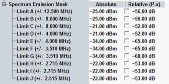
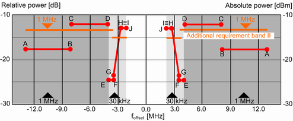

The spectrum emission mask complements the spectrum ACLR limits. The limits are defined in the configuration dialog. For relative limits, you can enable limit check for limit line, i.e. only for the pair of limit points at the same time.

The mask is defined as described in the following tables. The corresponding R&S CMW settings (points) are indicated.
The tables of spectrum emission mask list a relative requirement (dB relative to carrier). The frequency offset fO of measurement filter to the center frequency is displayed for information.
3GPP TS 25.141, section 6.5.2.1 defines requirements for the spectrum emission mask. Verify it for the test model 1.
Also, the requirements in the subsequent tables have to be fulfilled, depending on the operating band. When you select an operating band with additional requirements, modify accordingly the limit settings manually.
The following tables provide an overview of these NodeB requirements , that depend on the frequency offset fO. The frequency offset fO is the separation between the carrier frequency and the center of the measurement bandwidth. Please note that the last fO of the point A indicates the implemented default value. 3GPP defines f_offsetmax instead, which is "either 12.5 MHz or the offset to the UMTS Tx band edge, whichever is the greater".
fO/MHz | Requirements for the various NodeB max. output power P in dBm | Measurement bandwidth | |||
|---|---|---|---|---|---|
P/dBm ≧ 43 | 39 ≦ P/dBm < 43 | 31 ≦ P/dBm < 39 | P/dBm < 31 | ||
2.515 to 2.715 (Points J, I) | -12.5 | -12.5 | P - 51.5 | -20.5 | 30 kHz |
2.715 to 3.515 (Points H, G) | -12.5 - 15x[(fO/MHz) - 2.715] | -12.5 - 15x[(fO/MHz) - 2.715] | P - 51.5 - 15x[(fO/MHz) - 2.715] | -20.5 - 15x[(fO/MHz) - 2.715] | 30 kHz |
3.515 to 4.0 (Points F, E) | -24.5 | -24.5 | P - 63.5 | -32.5 | 30 kHz |
4.0 to 8.0 (Points D, C) | -11.5 | -11.5 | P - 50.5 | -19.5 | 1 MHz |
8.0 to 12.5 (Points B, A) | -11.5 | P - 54.5 | P - 54.5 | -23.5 | 1 MHz |
fO/MHz | Requirements for the various NodeB max. output power P in dBm | Measurement bandwidth | |||
|---|---|---|---|---|---|
P/dBm ≧ 43 | 39 ≦ P/dBm < 43 | 31 ≦ P/dBm < 39 | P/dBm < 31 | ||
2.515 to 2.715 (Points J, I) | -12.2 | -12.2 | P - 51.2 | -20.2 | 30 kHz |
2.715 to 3.515 (Points H, G) | -12.2 - 15x[(fO/MHz) - 2.715] | -12.2 - 15x[(fO/MHz) - 2.715] | P - 51.2 - 15x[(fO/MHz) - 2.715] | -20.2 - 15x[(fO/MHz) - 2.715] | 30 kHz |
3.515 to 4.0 (Points F, E) | -24.2 | -24.2 | P - 63.2 | -32.2 | 30 kHz |
4.0 to 8.0 (Points D, C) | -11.2 | -11.2 | P - 50.2 | -19.2 | 1 MHz |
8.0 to 12.5 (Points B, A) | -11.2 | P - 54.2 | P - 54.2 | -23.2 | 1 MHz |
fO | Additional requirement | Measurement bandwidth |
|---|---|---|
2.515 MHz to 3.515 MHz | –15 dBm | 30 kHz |
4.0 MHz to 12.5 MHz | –13 dBm | 1 MHZ |
fO | Additional requirement | Measurement bandwidth |
|---|---|---|
2.515 MHz to 3.515 MHz | –15 dBm | 30 kHz |
3.55 MHz to 12.5 MHz | –13 dBm | 100 kHz |
fO | Additional requirement | Measurement bandwidth |
|---|---|---|
2.515 MHz to 2.615 MHz | –13 dBm | 30 kHz |
2.65 MHz to 12.5 MHz | –13 dBm | 100 kHz |
Each linear limit line section is defined by a pair of points (A, B), (C, D) ... (I, J), assuming a linear power/frequency dependence or by a horizontal line.
All measured spectrum emission values are relative to the NodeB output power measured in a 3.84 MHz bandwidth (reference power). These dB values are used to check relative limits. To check absolute limits, the relative spectrum emission values are converted into absolute values (dBm). For current values, the conversion is based on the current reference power. For average and maximum values, it is based on the average reference power.
The complete spectrum emission mask for band II is shown in the figure below.
